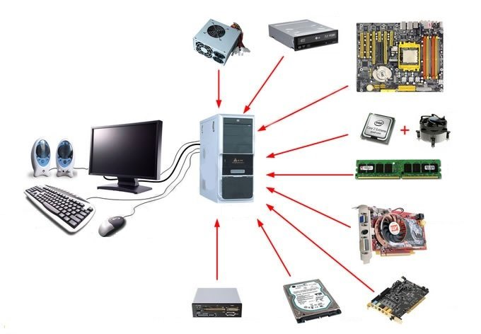

The terms of technology.
Terms in the world of technology have a wide variety of meaning. It can describe the process of how computers compute the data they have recieved and display it, it could be different types of computing software, or it could be something else entirely.

Computer: An electronic device which is programmable, it can accept input commands and process them to provide a result.

Hardware: The physical electronic parts inside or outside of the computer such as the cpu, the keyboard and mouse, the monitor, and so on.

Software: The programming inside the computer that allows it to operate in a functional matter and proccess information. An example of this is the windows program that many users often use.

Application Software: Programs designed to preform specific tasks with examples being photoshop, Microsoft excel, web browsers, and video game launchers such as steam. There is also programs that allow people to write their own programs or code like Java or Python.

Data: Facts and statistics that are unorginized and yet to be inputted.
Communications: The transmission of data from one device to another. For example a computer communicates the infromation proccesed to the internet through a modem or router.

Internet: A network of networks the internet is an online application that provides all sorts of services to people all over the world. The internet links computers and other types of devices to online services which can be used for practical research or web browsing to complex services such as coding and work related things.
Internet Service Provider: An internet service provider or ISP is a company that provides internet access for a price, we have two major internet providers in Canada with them being Telus and Shaw. Different providers have different capabilities, Shaw and Telus are often used in ones home while Bell, Fido, Virgin and others providing services for smartphones and other mobile devices.

Information: Data that has been proccesed and compiled into an organized meaningful form.

Input: The act of inputing a command onto a computer is the user providing the task for the computer to complete, this can one of many methods such as punch cards, microphones, or typing it out on a keyboard.
Proccesing: Proccesing is the next step after input, the computer runs and computes the data that was inputed.

Output: The output of the computer is seen when the computer displays the results that it proccesed from the input command, this can be printed out on paper or displayed on a monitor.

Storage: After diplaying the output the computer will save the results into the storage of the computer allowing the output to be looked over again and used for the future if needed.

Personal Computer: A personal computer or more widely known as a PC is used for personal uses, it is sometimes refered to as a microcomputer. These can range from work, school, research, content viewing, and more. These often have a sole user as it is their property.
Desktop: Desktops are computers made to sit upon a desk or sit next to it, these are usually encased in a tower chasis to sit vertically. These cover all basic ranges of functions and have become the standard computer designs that we are used to today.

Embedded Computer: A miniature computer embedded into a product designed specifically to support functions and specific tasks for that product.

Portable Devices: Designed specifically to be portable these can range from laptops, tablets, hybrid notebook tablets which have a keyboard that can be flipped onto the back, and more. The uses of these are often seen in commercial businesses and around ones home, the capability of each machine is dependent on their size and manufacturer. To have a computer which is portable has become popular around the world as it allows ease of access to information, content, and more.

Mobile Devices: A small mobile device with built in internet and computing abilities.

Smartphones: A smartphone is a pocket sized mobile device and phone with the abilities to have internet, to surf the web, to download thing such as music or files, to run mobile apps, take photos, and more.

Media Tablet: a larger mobile device with the same capabilities as smartphones however are improved dependent on the design and producers, these are made to browse multimedia content with a larger screen.